HOGENT Boost-Je-Onderwijs-Week
Bert Van Vreckem (bert.vanvreckem@hogent.be)
2024-09-09
Wensen:
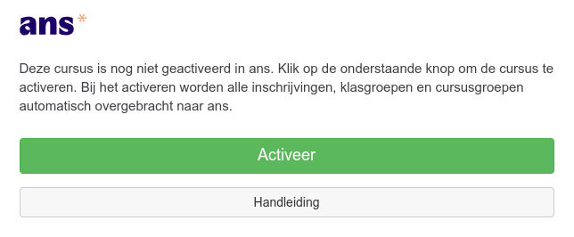
Na activatie kan je doorklikken naar Ans (of https://ans.app/)
Maak eerst een itembank aan voor het vak
Staat los van het vak in Chamilo/Ans!
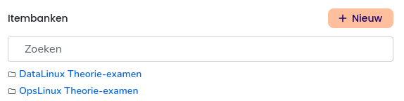
Ga naar Leerdoelen
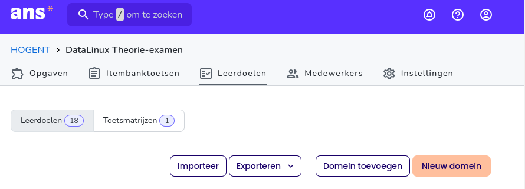
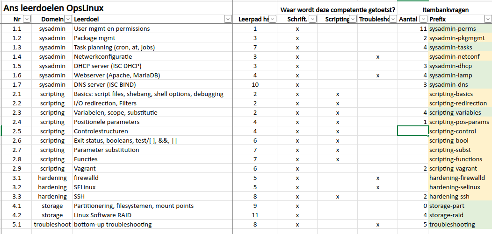
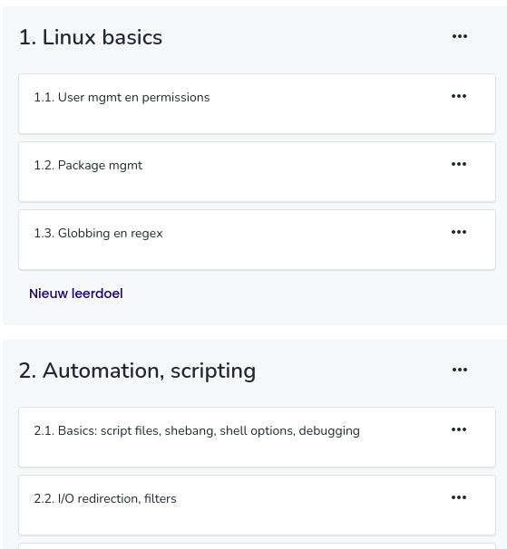
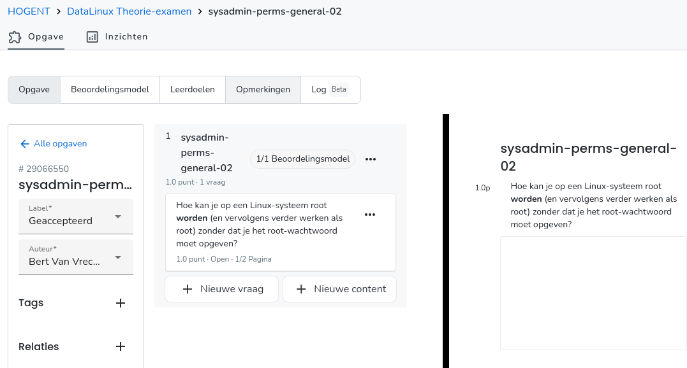
domein-topic-nn)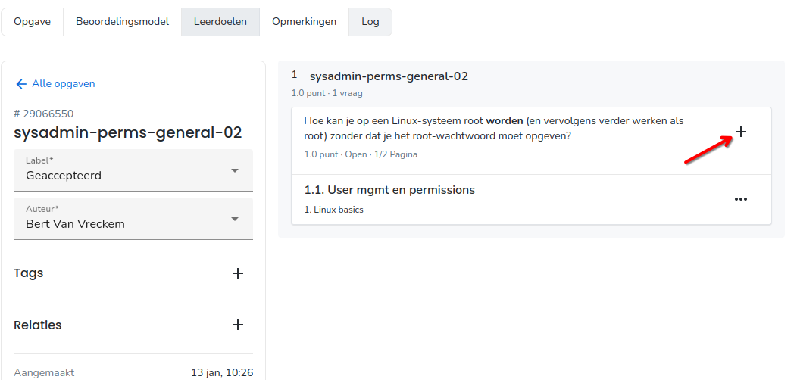
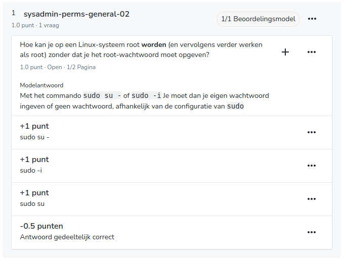
Meer bepaald: open vraag waarvan de opgave + modeloplossing (deels) gegenereerd werd door Python.
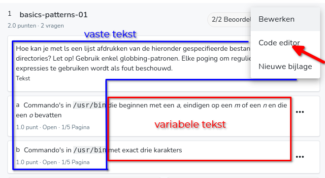
vragen = [
('die beginnen met een <i>a</i> en eindigen op een <i>n</i>',
'/usr/bin/a*n'),
('die beginnen met een <i>a</i>, eindigen op een <i>m</i> of een <i>n</i> ...',
'/usr/bin/a*o*[mn]'),
('waarvan de tweede letter een <i>a</i> is',
'/usr/bin/?a*'),
('waarvan de tweede letter een <i>a</i> is en die eindigen op een <i>n</i>',
'/usr/bin/?a*n'),
('met exact drie karakters',
'/usr/bin/???'),
('die eindigen op een oneven cijfer',
'/usr/bin/*[13579]'),
('waarvan het tweede teken geen kleine letter is',
'/usr/bin/?[^a-z]*')
]# Selecteer 2 verschillende vragen
selectie1 = random(0, len(vragen)-1)
selectie2 = (selectie1 + random(1, len(vragen)-2)) % len(vragen)
# Elke variabele kan je in een vraag gebruiken
vraag_a = vragen[selectie1][0]
antwoord_a = vragen[selectie1][1]
vraag_b = vragen[selectie2][0]
antwoord_b = vragen[selectie2][1]
# Printf ter info (test, controle)
print(f"a) Commando's in /usr/bin {vraag_a}.")
print(f' Antwoord: {antwoord_a}')
print(f"b) Commando's in /usr/bin {vraag_b}.")
print(f' Antwoord: {antwoord_b}')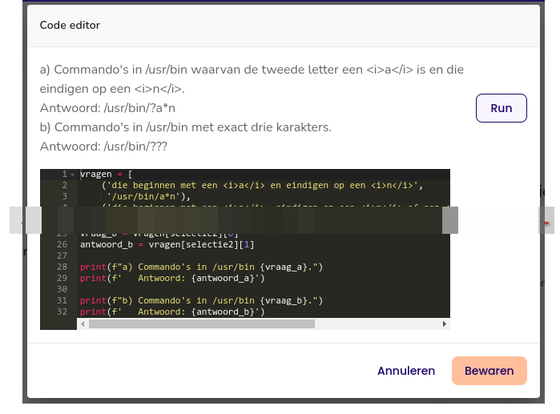
De waarde van elke variabele kan je in een vraag gebruiken:
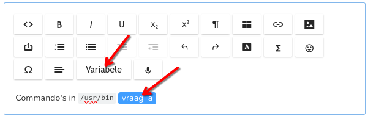
Idem voor modelantwoord:
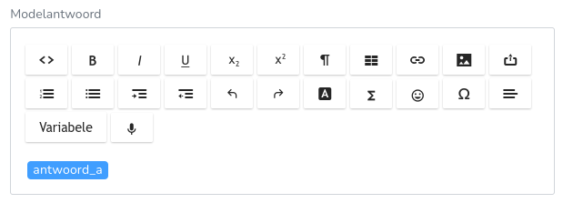
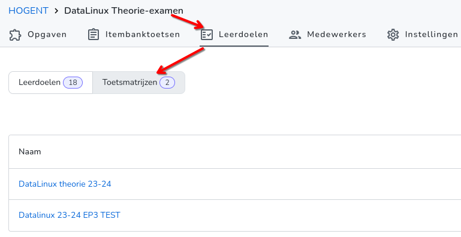
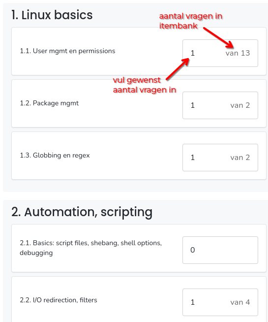
Zie ook deze demo: https://www.youtube.com/watch?v=QlfRhk2IwGU&t=22s
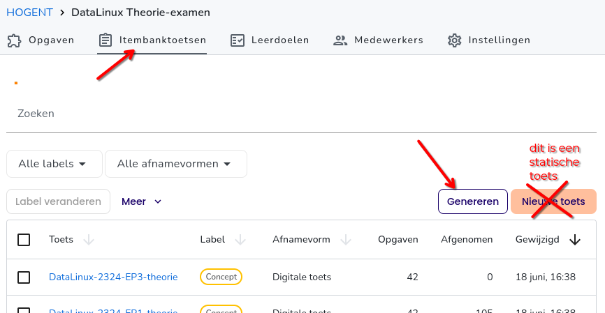
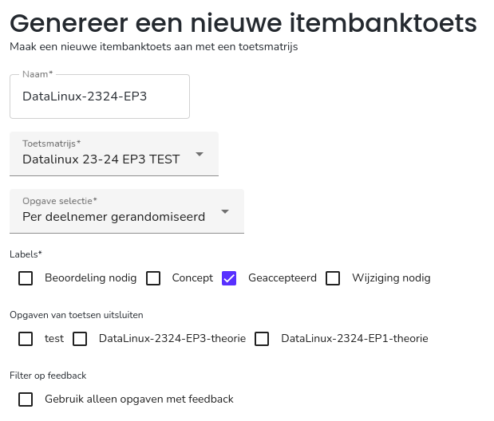
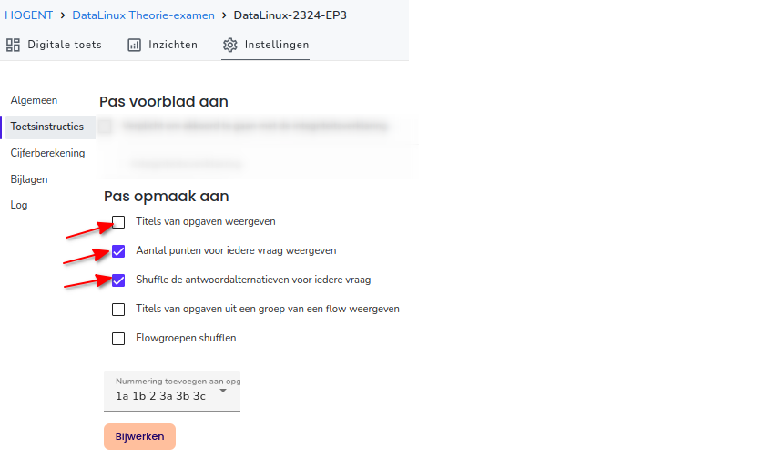
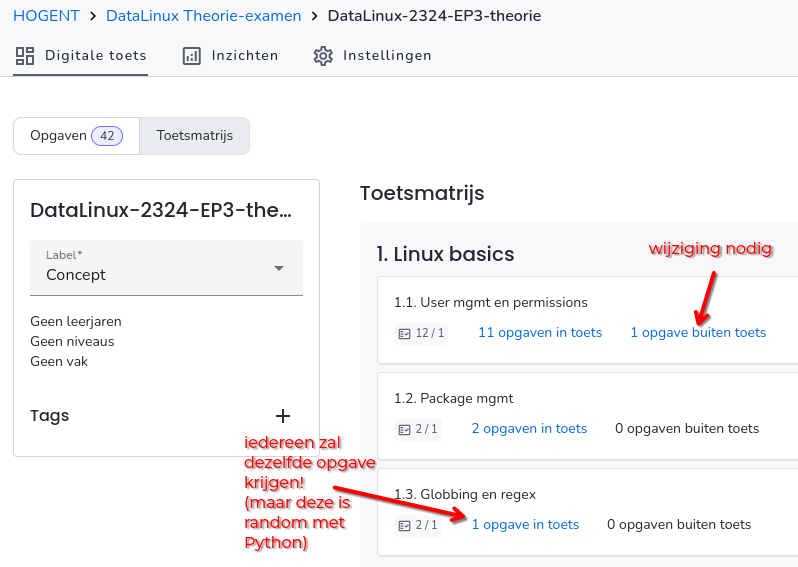
Doe dit pas als de toets klaar is! Wijzigingen in vragen komen niet meteen in de toets!
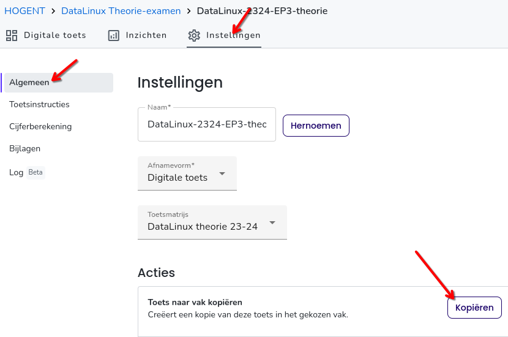
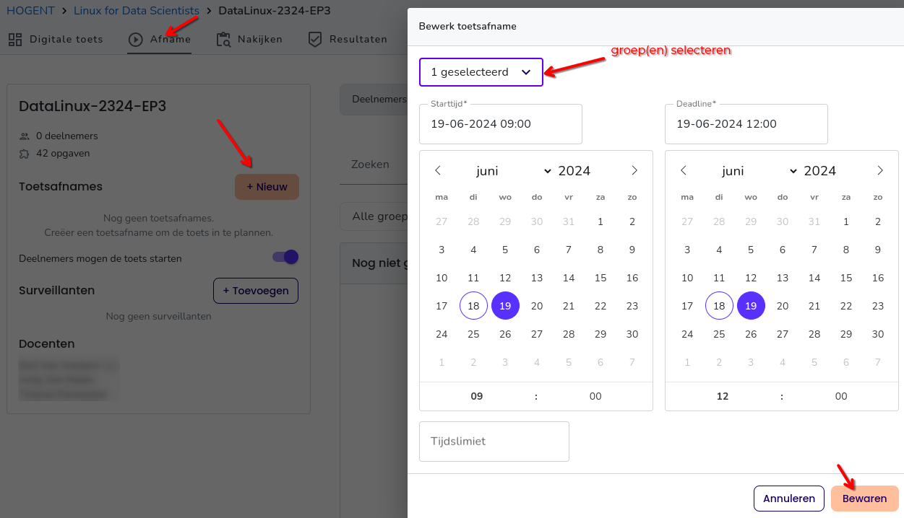
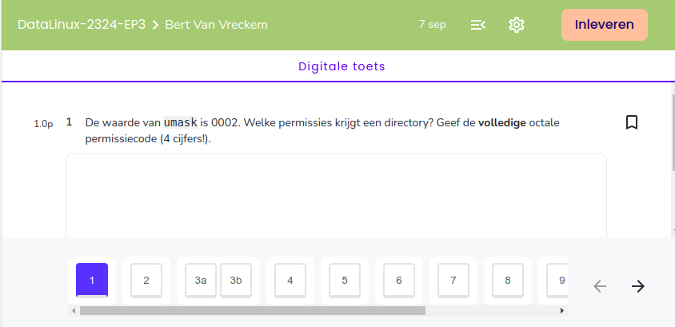
Aanpassingen blijven mogelijk!
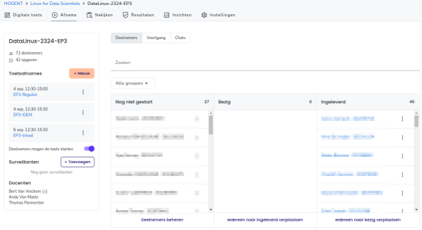
Mijn ervaring: nog 20% van de tijd nodig voor verbeteren t.o.v. papieren examen!
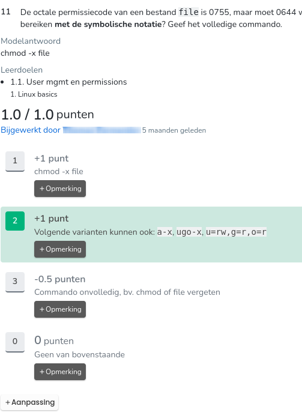
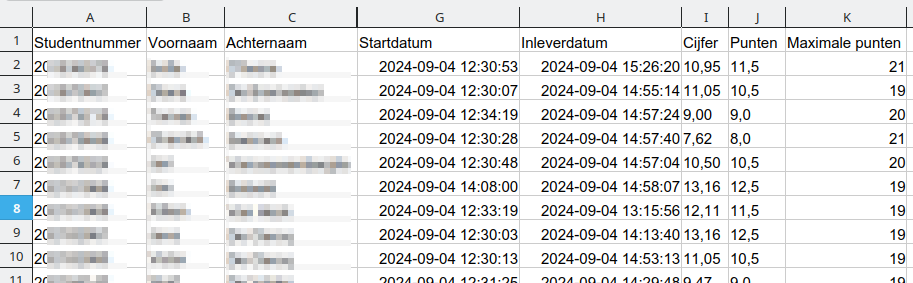
Veel mogelijk, nog niet geprobeerd 😉
Demo/vragen op een rustiger moment? Laat iets weten!
of Ans-kanaal op Teams